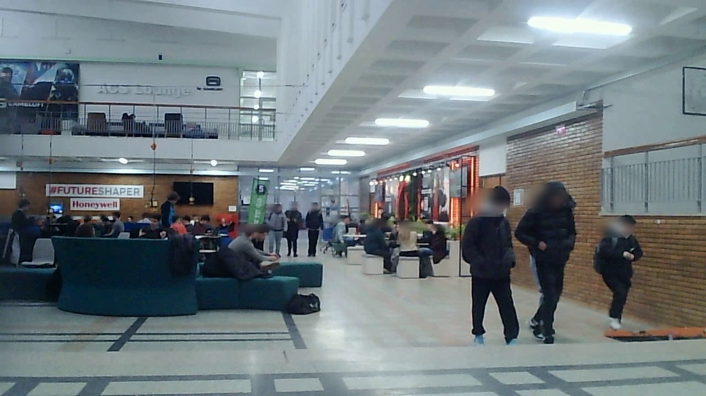
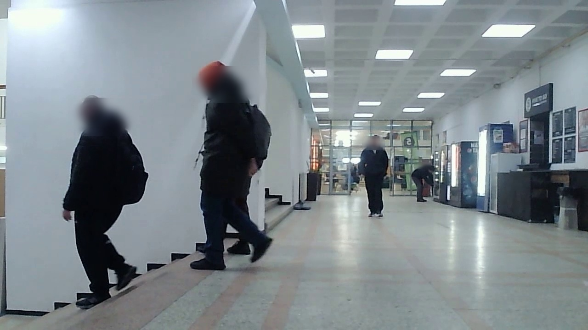
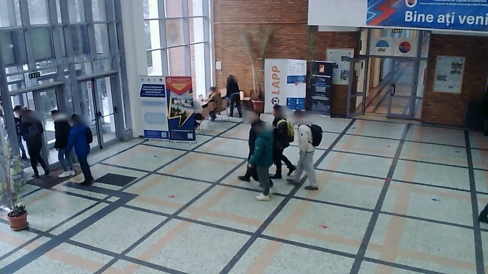
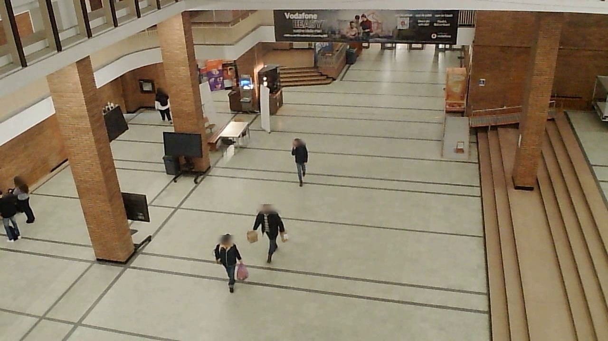
Understanding human behaviour in crowded indoor environments is a core challenge for surveillance, smart-building applications, and human-robot interaction — all of which depend on the ability to reliably detect, segment, and track individuals within complex, dynamic social contexts. Yet existing datasets rarely capture the diversity and difficulty of real-world indoor scenes at scale.
We introduce IndoorCrowd, a multi-scene dataset for indoor human detection, instance segmentation, and multi-object tracking, collected across four distinct indoor public locations within a campus (ACS-EC, ACS-EG, IE-Central, R-Central). The dataset comprises 31 videos sampled at 5 fps, totalling 9,913 frames with human-verified, manually corrected per-instance segmentation masks.
To characterise the quality of foundation-model-based auto-labelling in crowded indoor scenes, we establish a control subset of 620 frames annotated entirely by humans and benchmark three automatic annotators — SAM3, GroundingSAM, and EfficientGroundingSAM — against this ground truth using Cohen's κ, AP@0.5, AP@0.75, precision, recall, and mask IoU per scene. An additional 2,552 frames form a multi-object tracking subset with human-verified continuous identity tracks in MOTChallenge format. We further establish detection, segmentation, and tracking baselines by pairing YOLOv8n, YOLOv26n, and RT-DETR-L with ByteTrack, BoT-SORT, and OC-SORT across all four scenes.
Per-scene analysis reveals substantial variation in difficulty driven by crowd density, instance scale, and occlusion: ACS-EC, with 79.3% dense frames and a mean instance scale of 60.8 px, is the most challenging scene in the dataset.
9,913
Annotated frames
620
Human-annotated control frames
2,552
MOT subset frames
4
Indoor scenes
| Scene | Instances | Persons/frame (mean ± std) | Sparse (%) | Medium (%) | Dense (%) | Occlusion rate |
|---|---|---|---|---|---|---|
| ACS-EC | 2,128 | 12.23 ± 3.80 | 2.9% | 17.8% | 79.3% dense | 27.5% |
| ACS-EG | 1,260 | 5.41 ± 1.94 | 18.5% | 81.5% | 0.0% | 38.3% |
| IE-Central | 1,083 | 7.96 ± 3.63 | 0.0% | 76.5% | 23.5% | 31.9% |
| R-Central | 391 | 6.86 ± 1.52 | 1.8% | 98.2% | 0.0% | 26.9% |
| Overall | 4,862 | 8.10 ± 4.18 | 5.8% | 62.0% | 32.2% | 30.3% |
Density bins: sparse ≤ 3, medium 4–10, dense > 10 persons/frame. Occlusion estimated via bounding-box overlap (IoU > 0.1).
| Scene | Rel. scale (mean ± std) | Abs. scale px (mean ± std) | AR (mean ± std) | Small (%) | Medium (%) | Large (%) |
|---|---|---|---|---|---|---|
| ACS-EC | 0.063 ± 0.039 | 60.8 ± 37.7 | 2.02 ± 0.89 | 17.2% | 73.5% | 9.4% |
| ACS-EG | 0.141 ± 0.081 | 135.6 ± 78.2 | 3.28 ± 1.03 | 1.0% | 40.6% | 58.4% |
| IE-Central | 0.095 ± 0.040 | 91.2 ± 38.6 | 2.48 ± 0.66 | 3.3% | 49.8% | 46.9% |
| R-Central | 0.062 ± 0.017 | 59.1 ± 16.4 | 2.26 ± 0.73 | 4.9% | 93.6% | 1.5% |
COCO size bins: small < 32 px², medium 32²–96² px², large > 96² px².
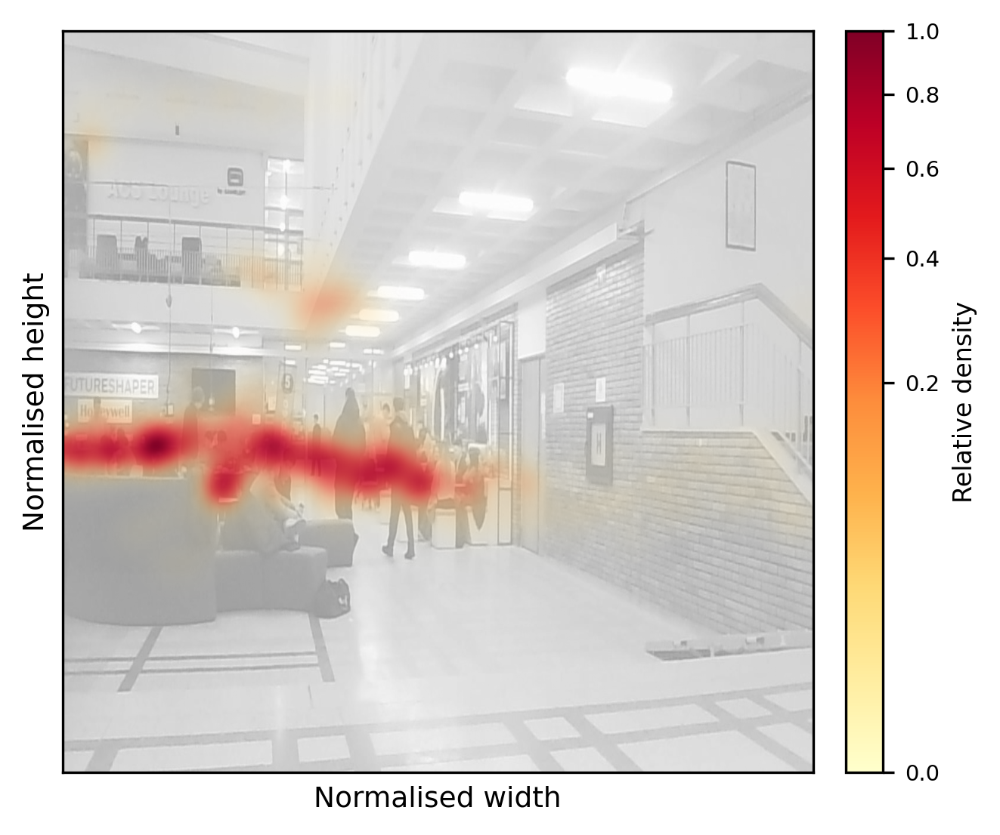
ACS-EC — dense multi-level atrium with the highest proportion of dense frames.
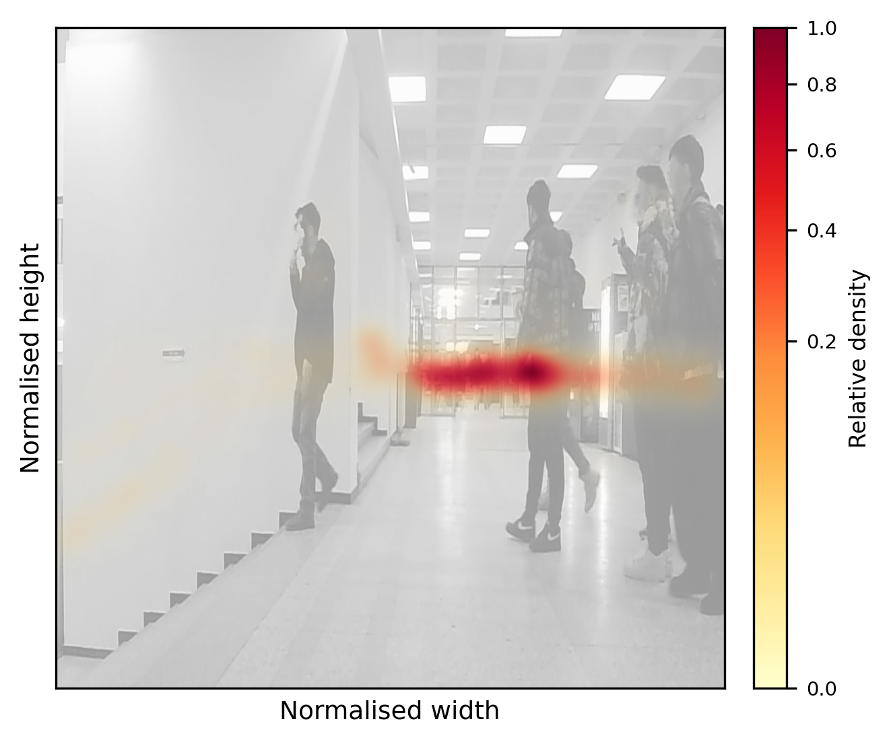
ACS-EG — corridor scene with strong near-to-distal scale variation.
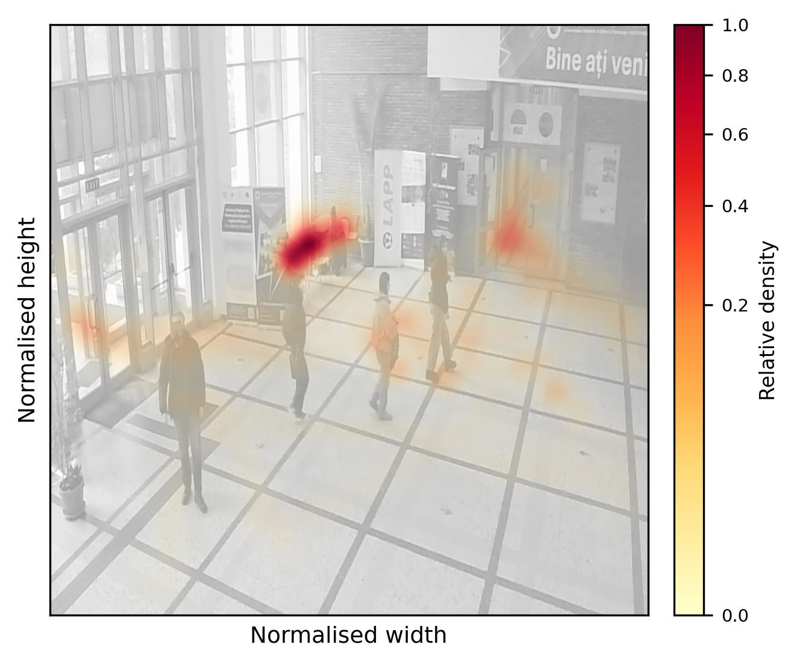
IE-Central — entrance hall with wide variation in per-frame crowd counts.
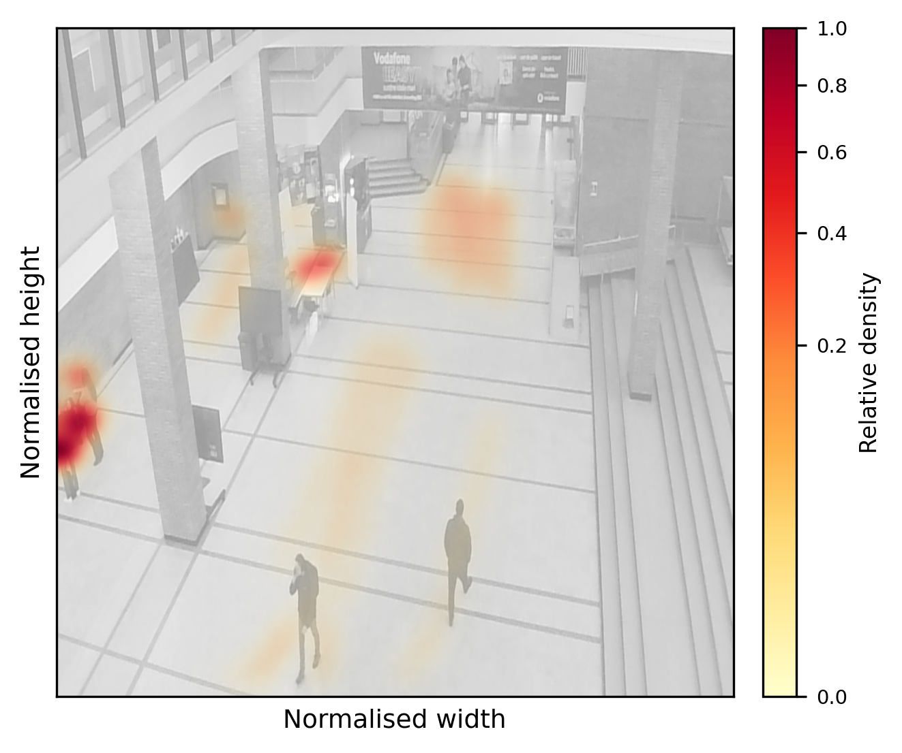
R-Central — overhead atrium where structural columns create regular partial occlusions.
We employ a human-in-the-loop pipeline that combines high-recall foundation-model auto-labelling with targeted human correction, enabling efficient scaling across 9,913 frames while preserving ground-truth fidelity.
Evaluated against the 620-frame human ground truth. Metrics: AP@0.5, AP@0.75, Precision, Recall, Mask IoU, Cohen's κ.
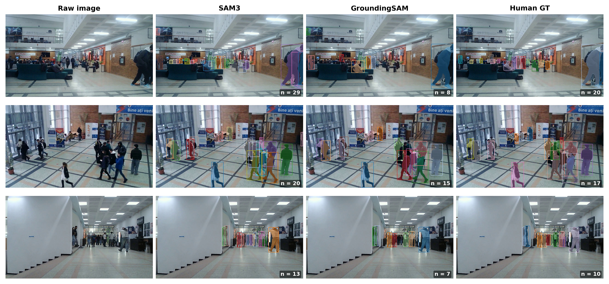
Columns: raw image | SAM3 | GroundingSAM | human ground truth. SAM3 over-predicts in dense scenes (row 1); GroundingSAM misses occluded persons.
| Scene | Method | AP@0.5 ↑ | AP@0.75 ↑ | Prec. ↑ | Rec. ↑ | Mask IoU ↑ | Cohen's κ ↑ |
|---|---|---|---|---|---|---|---|
| ACS-EC | SAM3 | 0.783 | 0.599 | 0.522 | 0.882 | 0.802 | 0.849 |
| GroundingSAM | 0.435 | 0.324 | 0.831 | 0.474 | 0.831 | 0.762 | |
| Efficient G-SAM | 0.433 | 0.323 | 0.829 | 0.472 | 0.803 | 0.758 | |
| ACS-EG | SAM3 | 0.963 | 0.862 | 0.749 | 0.976 | 0.859 | 0.926 |
| GroundingSAM | 0.922 | 0.824 | 0.870 | 0.939 | 0.869 | 0.931 | |
| Efficient G-SAM | 0.924 | 0.826 | 0.872 | 0.941 | 0.850 | 0.934 | |
| IE-Central | SAM3 | 0.928 | 0.788 | 0.829 | 0.946 | 0.836 | 0.923 |
| GroundingSAM | 0.803 | 0.670 | 0.929 | 0.817 | 0.835 | 0.902 | |
| Efficient G-SAM | 0.804 | 0.672 | 0.929 | 0.818 | 0.809 | 0.904 | |
| R-Central | SAM3 | 0.946 | 0.832 | 0.652 | 0.982 | 0.847 | 0.864 |
| GroundingSAM | 0.901 | 0.774 | 0.670 | 0.944 | 0.853 | 0.859 | |
| Efficient G-SAM | 0.900 | 0.774 | 0.669 | 0.941 | 0.830 | 0.849 |
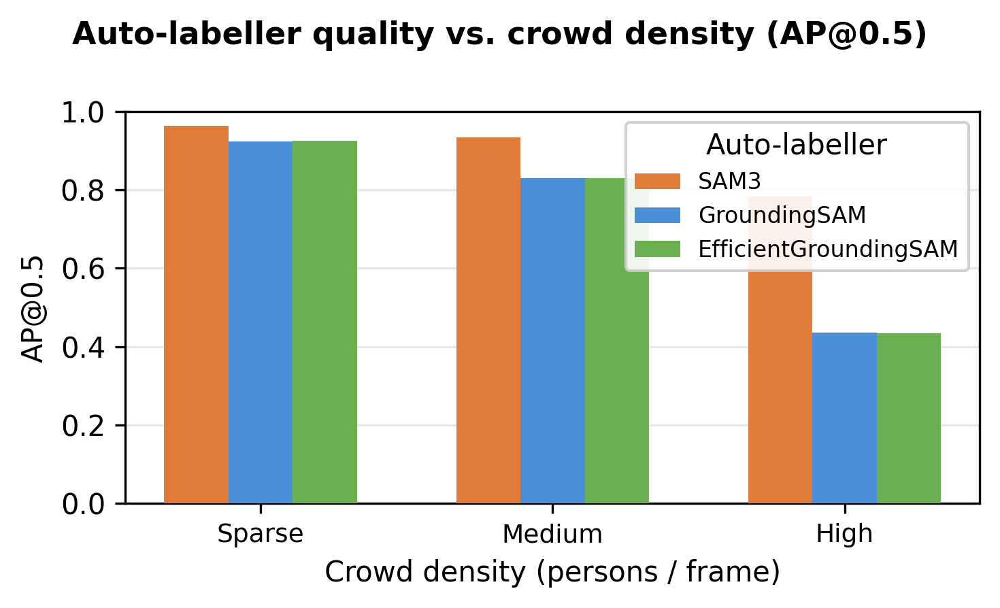
AP@0.5 per method by crowd density bin (sparse, medium, dense).
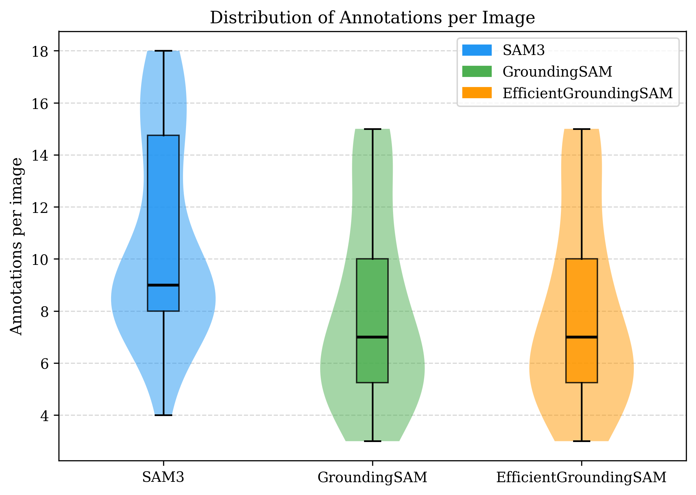
Distribution of annotations per image for SAM3, GroundingSAM, and EfficientGroundingSAM.
All models trained on ACS-EC + ACS-EG (COCO-pretrained, 30 epochs, batch 16, 640×640 input) and evaluated on the held-out scenes IE-Central + R-Central. Latency on NVIDIA RTX 4060Ti (16 GB, batch 1).
| Model | Task | Box mAP@0.5 ↑ | Box mAP@0.50:95 ↑ | Mask mAP@0.5 ↑ | Mask mAP@0.50:95 ↑ | Latency (ms) ↓ | Size (MB) ↓ |
|---|---|---|---|---|---|---|---|
| YOLOv8n | detect | 0.864 | 0.616 | — | — | 2.28 | 6.22 |
| YOLOv26n | detect | 0.796 | 0.560 | — | — | 2.81 | 5.36 |
| RT-DETR-L | detect | 0.911 | 0.704 | — | — | 27.36 | 66.21 |
| YOLOv8n-seg | segment | 0.864 | 0.620 | 0.833 | 0.541 | 1.89 | 6.76 |
| YOLOv26n-seg | segment | 0.808 | 0.572 | 0.787 | 0.512 | 2.61 | 6.51 |
Six detector–tracker combinations evaluated across all four scenes in MOTChallenge format.
| Detector | Tracker | MOTA ↑ | IDF1 ↑ | MT% ↑ | ML% ↓ | IDS ↓ | FPS ↑ |
|---|---|---|---|---|---|---|---|
| YOLOv8n | ByteTrack | 48.5 | 66.9 | 49.0 | 35.4 | 161 | 108.2 |
| YOLOv8n | BoT-SORT | 51.5 | 68.6 | 52.9 | 34.6 | 143 | 118.5 |
| YOLOv8n | OC-SORT | 51.4 | 68.6 | 45.3 | 35.8 | 138 | 119.5 |
| RT-DETR-L | ByteTrack | 51.4 | 69.3 | 55.5 | 27.2 | 172 | 31.4 |
| RT-DETR-L | BoT-SORT | 55.5 | 71.6 | 60.6 | 26.2 | 161 | 32.0 |
| RT-DETR-L | OC-SORT | 56.2 | 71.8 | 54.7 | 27.4 | 166 | 32.7 |
Existing pedestrian detection benchmarks — CrowdHuman, WiderPerson, CityPersons — are predominantly outdoor. The MOTChallenge series (MOT17, MOT20) has been the primary driver of tracking progress but lacks instance masks and focuses on unconstrained or event-based environments rather than fixed indoor surveillance.
JTA provides large-scale synthetic indoor/outdoor tracking, while JRDB-PanoTrack targets robot-centric panoramic views. IndoorCrowd fills the niche of real-world, fixed-camera indoor scenes with all three annotation types (bounding boxes, instance masks, MOT tracks) across diverse crowd conditions.
@InProceedings{Nae_2026_CVPR,
author = {Nae, Sebastian-Ion and Moldoveanu, Radu and Ghiț\u{a}, Alexandra Ștefania and Florea, Adina Magda},
title = {IndoorCrowd: A Multi-Scene Dataset for Human Detection, Segmentation, and Tracking with an Automated Annotation Pipeline},
booktitle = {Proceedings of the IEEE/CVF Conference on Computer Vision and Pattern Recognition (CVPR) Workshops},
month = {June},
year = {2026},
pages = {2964-2973}
}